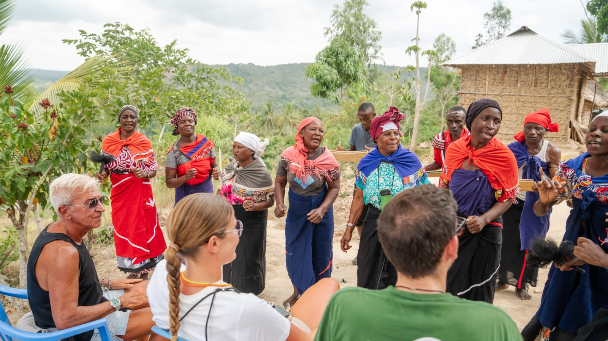
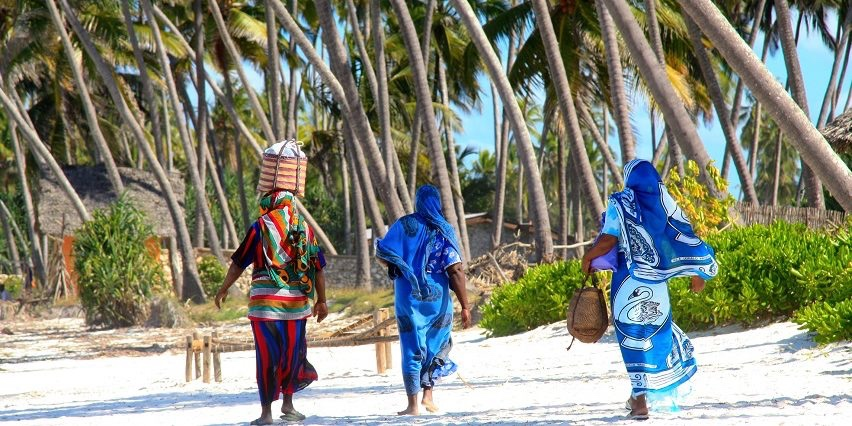

Two village bike excursions that finish the journey with people — the streets of Ukunda Town and the forested hills above them.
Fourth Tide · Connection
Every journey should end with the people who make a place what it is. Two bike tracks, two different sides of the coast — slower than a car, and far closer to the ground.

Ride through Ukunda's everyday streets and backroads — a stop for tea with a family, a walk through the market, a look inside a working kitchen. The coast's daily rhythm, not a show put on for visitors.

Head inland and uphill into the forested reserve above Diani — sable antelope, colobus monkeys, and a cooler, greener climate that feels like another country entirely, all within an hour of the beach.
Ready When You Are
The Five-Day Coast Adventure
One carefully curated journey. Local stays, hidden experiences and meaningful connections — no planning required.
Plan Your Escape